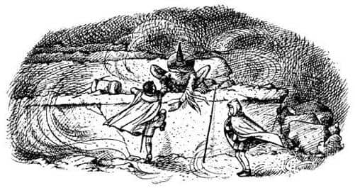
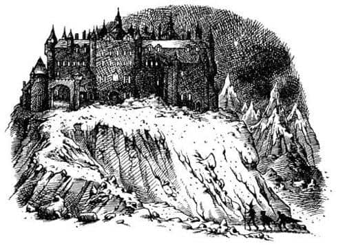
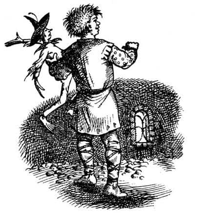

Garip Hendekler Tepesi
Korkunç bir gün olduğunu inkâr etmenin anlamı yok. Tepelerinde kar toplamış bulutların sarmaladığı güneşsiz bir gökyüzü; ayaklarının altında donmuş toprak ve derilerini yüzecekmişçesine esen bir rüzgâr vardı. Ovaya indiklerinde antik yolun bu bölümünün geçtikleri yerlerden çok daha kötü durumda olduğunu gördüler. Yollarını büyük kırık taşlar üzerinden, kayaların arasından ve yıkıntılardan geçerek bulmak zorundaydılar; sızlayan ayaklarıyla bu işi yapmak çok zordu. Ne var ki, ne kadar yorulurlarsa yorulsunlar, hava o kadar soğuktu ki mola vermelerine imkân yoktu.
Saat on civarında ilk minik kar tanesi ağır ağır düşerek Jill’in koluna kondu. On dakika sonra lapa lapa kar yağıyordu. Yirmi dakikada her yer bembeyaz oldu. Yarım saat sonra, bütün gün sürecekmiş gibi görünen kar fırtınası yüzlerine öyle bir çarpıyordu ki, önlerini zorlukla görebiliyorlardı. Daha sonra ne olduğunu anlayabilmek için görüş mesafelerinin ne kadar azaldığını unutmamak gerekir. Işıklı pencereleri gördükleri yerle aralarında kalan alçak tepeye yaklaştıklarında tepeyi göremiyorlardı. Tek ihtiyaçları birkaç adım ileriyi görebilmekti, ama bunun için bile gözlerini kısmak zorundaydılar. Konuşmadıklarını söylemeye gerek yok.
Tepenin eteklerine ulaştıklarında her iki yanlarında kayalara benzeyen şeyler gördüler; dikkatle bakıldığında bunların kare şeklinde kayalar oldukları anlaşılabilirdi, ama kimse bakmadı. Hepsi önlerindeki, yollarını tıkayan setle ilgileniyordu. Yaklaşık bir buçuk metre yüksekliğindeydi. Kıllıkıpırdak uzun bacaklarıyla üzerine sıçramakta zorluk çekmedi, sonra da diğerlerine yardım etti. Bu, Suratsız için olmasa da çocuklar için kötüydü, ıslanmalarına yol açmıştı, çünkü setin üzerinde kalın bir kar tabakası vardı. Sonra yaklaşık yüz metre kadar çok kötü bir yoldan zorlukla tırmanmaya devam ettiler. Jill bir kez düştü. Sonra ikinci bir sete geldiler. Düzensiz aralıklarla dört tane set vardı.

Dördüncü sete zorlukla tırmanırlarken artık yassı tepenin zirvesinde oldukları konusunda yanılmalarına imkân yoktu. O noktaya kadar yamaç onlar için bir sığınak olmuştu ama rüzgâr burada tüm şiddetiyle esiyordu. Çünkü tepenin zirvesi, tuhaftı ama uzaktan göründüğünden çok daha düzdü; bu büyük ve düzlük platoda rüzgârın önünde hiçbir engel yoktu. Birçok yerde kar birikemiyordu, çünkü rüzgâr karları bir bulut halinde kaldırıp yüzlerine savuruyordu. Bastıkları yerlerde, bazen buz tutmuş yerlerde gördüğünüz türden küçük çatlaklar oluşuyordu. Aslında birçok yerde toprağın yüzeyi buz tutmuş gibi dümdüzdü. Ancak yüzeyin bazen karelere ve dikdörtgenlere bölünen, zikzaklar çizen setler ve hendeklerle dolu olması işlerini oldukça güçleştiriyordu. Kuşkusuz bunların hepsini aşmak zorundaydılar; duvarların yüksekliği bir metreyle üç metre arasında değişiyordu ve yaklaşık altmış santim kalınlığındaydı. Kar her setin kuzey tarafında şimdiden büyük yığınlar oluşturmuştu; her tırmanıştan sonra bu yığınlardan aşağı iniyor ve ıslanıyorlardı.
Şapkası kafasında, başı eğik, uyuşmuş elleri pelerinin altında zorlukla ilerleyen Jill, bu korkunç arazide başka garip şeyler de görüyordu; sağındaki şeyler fabrika bacalarını andırıyordu ve solunda, normal uçurumlara hiç benzemeyen düzgün bir uçurum vardı. Ancak Jill bunlarla ilgilenmiyor, kafasını hiç yormuyordu. Düşündüğü tek şey üşümüş elleri (aynı zamanda burnu, çenesi ve kulakları), Harfang’daki sıcak banyo ve yataktı.
Aniden ayağı kaydı, yaklaşık üç metre sürüklendikten sonra dehşet içinde, dar ve karanlık bir yarıktan aşağıya düştü. Yarık sanki o anda önünde açılmıştı. Yarım saniye içinde dibe ulaştı. Yaklaşık bir metre genişliğinde bir tür hendeğin ya da yarığın içindeymiş gibi görünüyordu. Düşmenin yol açtığı sarsıntıya rağmen ilk fark ettiği şey rüzgârın erişemediği bir yerde olmanın rahatlığıydı; çünkü hendeğin duvarları başının üzerinde epeyce yükseliyordu. Sonra Scrubb ve Suratsız’ın endişeyle ona bakan yüzlerini fark etti.
“Bir yerin incindi mi Pole?” diye bağırdı Scrubb.
“İki ayağı da kırıldıysa şaşırmam” diye bağırdı Suratsız.
Jill ayağa kalktı ve iyi olduğunu söyledi, çıkması için ona yardım etmeleri gerekiyordu.
“Neyin içine düştün sen?” diye sordu Scrubb.
“Bir tür hendek, ya da toprak çöküntüsü gibi bir şey” dedi Jill. “Dümdüz devam ediyor.”
“Evet, öyle!” dedi Scrubb. “Kuzeye doğru gidiyor. Bir tür tünel mi acaba? Eğer öyleyse rüzgârdan etkilenmeden ilerleyebiliriz. Yerde çok kar var mı?”
“Neredeyse hiç yok. Sanırım kar taneleri yukarıdan uçup gidiyor.”
“İleride ne var?”
“Bir saniye. Gidip bakayım” dedi Jill. Kalkıp hendek boyunca yürüdü; ama fazla uzaklaşmadan hendeğin keskin bir dönemeçle sağa doğru kıvrıldığını gördü. Bunu bağırarak diğerlerine söyledi.
“Dönemeçten sonra ne var?” diye sordu Scrubb.
Scrubb uçurumlardan ne kadar korkuyorsa, Jill de dolambaçlı geçitlerden, yeraltındaki karanlık yerlerden –yüzeye yakın olsalar bile– o kadar korkuyordu. O köşeyi dönmeye hiç niyeti yoktu; Suratsız arkasından, “Dikkatli ol Pole. Orası bir ejderhanın mağarasına çıkıyor olabilir. Devlerin ülkesinde dev solucanlar ya da kanatlı böcekler de var sanırım” diye bağırınca tümüyle caydı.
“Bir yere gittiğini sanmıyorum” dedi Jill, aceleyle geri gelerek.
“Pekâlâ, kendim bakacağım” dedi Scrubb. “Bir de kendi gözlerimle göreyim.” Böylece Scrubb hendeğin kenarına oturdu (zaten sırılsıklam olduğundan biraz daha ıslanması pek bir şey değiştirmiyordu) ve aşağıya atladı. Jill’i kenara iterek ilerledi ve bir şey söylememesine rağmen Jill, Scrubb’ın, korktuğunu anladığından emindi. Bu yüzden onu yakından takip ediyor, ama önüne geçmemeye de dikkat ediyordu.
Bu keşif onları hayal kırıklığına uğratmıştı. Köşeyi döndüler ve birkaç adım ilerlediler. İki yoldan birini seçebilirlerdi: Dosdoğru ileriye ya da geriye. “Bu iyi değil” dedi Scrubb sağ tarafa bakarak, “bizi geriye, güneye götürür.” İlerlediler, ama birkaç adım sonra bir kez daha sağa kıvrılan ikinci bir yolla karşılaştılar. Bu kez seçme hakları yoktu, çünkü tünel burada sona ermişti.
“İyi değil” diye homurdandı Scrubb. Jill, hiç vakit kaybetmeden geriye yürümeye başladı. Jill’in düştüğü yere döndüklerinde Kıllıkıpırdak, uzun kollarıyla onları yukarı çekmekte hiç zorlanmadı.
Aşağıdaki o dar tünellerde kulakları tam da ısınmaya başlamıştı. Her şeyi açık ve net olarak görüp, rahat rahat nefes alabilmişlerdi ve konuşurken bağırmaları gerekmemişti. Dondurucu soğuğa tekrar çıkmak tam bir felaketti. Suratsız, “O işaretleri hatırladığından emin misin Pole? Sıradaki işaret nedir?” demek için o anı seçtiğinden, her şey daha bir zor göründü.
“Ah, haydi canım! Kahrolsun işaretler” dedi Pole. “Birinin Aslan’ın adını söylemesiyle ilgili bir şeydi. İşaretleri tekrarlamaya hiç niyetim yok.”
Gördüğünüz gibi sırayı karıştırmıştı. Bu her gece işaretleri tekrarlamaktan vazgeçmesinden kaynaklanıyordu. Düşünmeye zahmet etse işaretler aklının bir köşesinde kalırdı, ama artık onları bir çırpıda ve sırasıyla, ezberden okuyacak kadar iyi hatırlamıyordu. Suratsız’ın sorusu canını sıkmıştı, çünkü Aslan’ın öğrettiklerini hatırlamak için gerekli özeni göstermediğinden içten içe kendine sinirleniyordu. Bu sıkıntının üstüne yorgunluk ve soğuk da eklenince, “Kahrolsun işaretler” deyivermişti. Belki söylemek istediği bu değildi.
“Ah, bir sonraki işaret buydu değil mi?” dedi Suratsız. “Doğru olup olmadığını merak ediyorum. Karıştırdıysan şaşmam. Bana öyle geliyor ki bu tepe, bu üzerinde olduğumuz düzlük incelenmeye değer bir yer. Şeyi fark ettiniz mi—”
“Of Tanrım!” dedi Scrubb, “Durup manzarayı övmenin zamanı mı? Devam edelim Tanrı aşkına.”
“Aaa, bakın, bakın” diye bağırarak işaret etti Jill. Herkes döndü ve baktı. Kuzeyde, biraz uzakta üzerinde bulundukları platodan oldukça yüksekte bir dizi ışık belirmişti. Bu kez pencereler bir önceki geceden daha belirgindi, daha iyi seçilebiliyordu. İnsana yatak odalarını düşündüren küçük pencereler; ayrıca ocaklarında ateşlerin gürlediği büyük salonları ve masada dumanı tüten sıcak çorbaları ya da dana filetolarını düşündüren büyük pencereler vardı.
“Harfang!” diye bağırdı Scrubb.
“İşte bu iyi oldu” dedi Suratsız. “Yani ben demek istiyordum ki—”
“Hadi, kapa çeneni” dedi Jill öfkeyle. “Kaybedecek bir saniyemiz yok. Kadının kapıların erkenden kilitlendiğini söylediğini hatırlamıyor musun? Oraya zamanında varmalıyız, evet varmalıyız. Böyle bir gecede dışarıda kalırsak ölürüz.”
“Şey, daha hava tam olarak kararmadı” diye başladı Suratsız; ama çocukların ikisi de, “Hadi” dedi ve kaygan platoda bacaklarının elverdiği ölçüde hızla, sendeleyerek ilerlemeye başladılar. Kıllıkıpırdak onları takip ediyordu. Hâlâ konuşuyordu, ancak artık rüzgâra karşı yürüdüklerinden isteseler bile onu duyamazlardı. Zaten istemiyorlardı da. Banyoları, yatakları ve sıcak içecekleri düşünüyorlardı; Harfang’a çok geç varıp dışarıda kalma fikri dayanılmaz bir şeydi.
Acele etmelerine rağmen tepeyi geçmeleri uzun sürdü. Geçtikten sonraysa öbür tarafta aşmaları gereken birçok set vardı. Sonunda tepenin eteklerine ulaştılar; artık Harfang’ın nasıl bir yer olduğunu görebiliyorlardı.
Yüksek ve sarp kayalıkların üzerindeydi; birçok kulesi olmasına rağmen kaleden çok büyük bir eve benziyordu. Anlaşılan nazik devler herhangi bir saldırıdan korkmuyordu. Dış duvarlarda yere oldukça yakın pencereler vardı – kimse kale yaparken yere yakın pencereler koymazdı. Hatta yer yer, avludan geçmeden kaleye girip çıkabileceğiniz garip, küçük kapılar bile vardı. Bu Jill ve Scrubb’ın biraz olsun keyiflenmesine sebep oldu. Küçük kapılar kaleyi daha sevimli ve sıcak gösteriyordu.

Başlangıçta kayalıkların sarplığı ve yüksekliği onları korkutmuştu, ama az sonra sollarında yukarıya çıkan daha kolay bir yol olduğunu ve onları doğruca kaleye götürdüğünü fark ettiler. Ama artık sabrı kalmayan Jill neredeyse vazgeçecekti. Scrubb ve Suratsız son yüz metrede ona yardım etmek zorunda kaldı. Sonunda kalenin kapısı önünde dikiliyorlardı. Demir parmaklıklar kaldırılmıştı ve kapı açıktı.
Ne kadar yorgun olursanız olun, bir devin kapısına yaklaşmak cesaret ister. Harfang hakkında önceden yaptığı tüm uyarılara rağmen en cesur davranan yine Suratsız oldu.
“Düzgün adımlarla ilerleyin şimdi” dedi. “Ne yaparsanız yapın korkmuş görünmeyin. Buraya gelmekle dünyanın en gülünç şeyini yaptık. Artık burada olduğumuza göre, gözüpek görünsek iyi olur.”
Bu sözlerle kapıya doğru ilerledi, sesini güçlendirmesi için kemerin altında durdu ve bağırabildiği kadar yüksek sesle bağırdı.
“Hey! Kapıcı! Geceleyecek bir yer arayan misafirlerin var.”
Bir karşılık gelmesini beklerken şapkasını çıkarıp, geniş siperliğinde biriken karları silkeledi.
“Bana bak” diye fısıldadı Scrubb, Jill’e. “Oyunbozan olabilir, ama çok yürekli olduğu kesin.”
Kapı açıldı. İçeride yanan ateşin sıcaklığını hissettiler, bir kapıcı belirdi. Jill çığlık atmaktan korktuğu için dudaklarını ısırıyordu. Kapıcı tam anlamıyla bir dev değildi; yani demek istediğim, bir elma ağacından daha uzundu, ama bir telgraf direği kadar da uzun değildi. Fırça gibi kızıl saçları, zırh görevi yapsın diye üzerine metal levhalar iliştirilmiş deri bir yeleği, çıplak dizleri (nasıl da kıllıydı) ve bacaklarında tozluğa benzeyen şeyler vardı. Eğildi ve Suratsız’a baktı.
“Kimsin sen, önce bir kendini tanıt bakalım!” dedi.
Jill bütün cesaretini topladı. “Affedersiniz” dedi, deve bağırarak. “Yeşil giysili kadın, nazik devlerin kralını selamlıyor; biz güneyli iki çocuğu ve bu Kıllıkıpırdak’ı (ismi Suratsız’dır) Sonbahar Şenlikleri’nize gönderdi. Tabii sizin için uygunsa” diye ekledi.
“O-ho!” dedi kapıcı. “Bu çok değişik bir hikâye. Gelin küçük insanlar, gelin. Ben majestelerine haber gönderirken siz kapıcı kulübesine girseniz iyi edersiniz.” Çocuklara merakla baktı. “Yüzleri mor” dedi. “Onların bu renk olduğunu bilmiyordum. Ben pek sevmem. Sanırım birbirinize hoş görünüyorsunuz. Kuzguna yavrusu anka görünür derler.”
“Yüzlerimiz sadece soğuktan dolayı mor” dedi Jill. “Gerçek rengi bu değil.”
“Öyleyse gelin ve ısının. Gelin küçük karidesler” dedi kapıcı. Arkasından yürüyüp kulübenin içine girdiler. Böylesine büyük bir kapının gürültüyle arkalarından kapandığını duymak çok korkunçtu, ama dün akşam yemeğinden beri özledikleri şeyi – ateşi – görür görmez unuttular bunu. Öyle bir ateşti ki! Sanki dört ya da beş ağaç alev alev yanıyormuş gibiydi ve o kadar sıcaktı ki, metrelerce uzağında durabiliyorlardı. Sıcağa dayanabilecekleri kadar yaklaşarak tuğla zemine çöktüler, sevinçten çığlık çığlığa bağırdılar.
Kapıcı, odanın gerisinde oturan, gözleri yuvalarından fırlayacakmış gibi ziyaretçilere bakan başka bir deve, Jill’in kendisine söylediklerini tekrarlayarak, “Hadi bakalım, evladım. Koş bu haberi eve götür” dedi. Genç dev, son bir bakış ve hiç de hoş olmayan bir kahkahayla odayı terk etti.
“Şimdi kurbağacık” dedi kapıcı Suratsız’a, “biraz neşelenmeye ihtiyacın varmış gibi görünüyor.” Suratsız’ın şişesine çok benzeyen ancak yirmi kat daha büyük olan siyah bir şişe çıkardı. “Evet, bir bakalım” dedi kapıcı. “Sana bir bardak verirsem içinde boğulursun. Şu gümüş tuzluk tam aradığım şey. Evde bundan bahsetmenize hiç gerek yok. Evin gümüşleri nedense hep buraya geliyor, ama bu benim hatam değil.”
Tuzluk daha dar ve uzunca olduğundan bizim kullandıklarımıza pek benzemiyordu. Dev tuzluğu yere, Suratsız’ın yanına koydu; oldukça iyi bir bardak olmuştu. Çocuklar Suratsız’ın, nazik devlere olan güvensizliğinden ötürü bunu reddetmesini beklemişti. Ancak, “Artık içerideyiz ve kapı kapalı, bu yüzden dikkatli olsak da bir işe yaramaz” diye söyleniyordu. Sonra likörü kokladı. “Hoş kokuyor” dedi. “Tabii buna güvenilmez. Emin olmam gerek.” Likörden bir yudum aldı. “Tadı da iyi” dedi. “Fakat ilk yudumda tadı iyi olabilir. Sonrası nasıl acaba?” Daha büyük bir yudum aldı. “Ah!” dedi. “Sonuna kadar böyle mi acaba?” Bir yudum daha aldı. “Dibinde iğrenç bir şey varsa şaşmam” dedi ve içkiyi bitirdi. Dudaklarını yalayıp çocuklara, “Bu bir deneme, görüyorsunuz. Kıvranırsam, patlarsam ya da kertenkeleye dönüşürsem veya başka bir şey olursa size sundukları şeyleri yememeniz gerektiğini anlarsınız herhalde” dedi. Suratsız’ın alçak sesle söylediklerini duyamayacak kadar uzakta olan dev kahkahalarla güldü ve “Hey, kurbağacık, sen sıkı bir adamsın. Nasıl içtiğini gördünüz mü?” dedi.
“Adam değil. Kıllıkıpırdak” diye cevapladı Suratsız fısıltıyla. “Kurbağa da değil, Kıllıkıpırdak.”
O anda arkalarındaki kapı açıldı ve genç dev içeriye girerek, “Hemen taht salonuna gitmeleri gerekiyor” dedi. Çocuklar ayağa kalktılar ama Suratsız oturmaya devam etti ve, “Kıllıkıpırdak. Kıllıkıpırdak. Çok saygın bir Kıllıkıpırdak. Sayooygın bir Karlıküpürdek” dedi.

“Onlara yolu göster, oğlum” dedi kapıcı dev. “Kurbağacığı taşısan iyi olur. Biraz fazla içti.”
“Bir şeyim yok” dedi Suratsız. “Kurbağa değil. Kurbağaya benzer yanım yok. Ben saooygın biriyim.”
Genç dev onu belinden yakaladı ve çocuklara onu takip etmeleri için işaret etti. Havada ayaklarını sallayan Suratsız gerçekten kurbağa gibi görünüyordu, bu hepsi için onur kırıcıydı. Ancak bunu fark edecek zamanları yoktu, çünkü çok geçmeden asıl kalenin büyük kapısından geçtiler – ikisinin de kalbi normalden hızlı atıyordu – ve bir sürü koridorda, devin adımlarına yetişebilmek için koşturarak patırtıyla ilerledikten sonra kendilerini lambaların parıldadığı ve ocakta ateşin gürlediği bir odanın ışığında gözlerini kırpıştırırken buldular; hem ateş hem de lambaların ışıkları tavanın ve kornişlerin yaldızında yansıyordu. Sayamayacakları kadar çok dev muhteşem elbiseler içinde, sağlarında ve sollarında ayakta duruyordu. Odanın öbür ucundaki iki tahtta kral ve kraliçe gibi duran iki koca karaltı oturuyordu.
Tahtlardan yaklaşık altı metre uzakta durdular. Scrubb ve Jill beceriksizce reverans yapmaya çalıştı (Uygulama Okulu’nda kızlara reverans yapmak öğretilmiyordu). Genç dev Suratsız’ı dikkatle yere koyduğunda, o da çökmekle oturmak arası bir durumda kalmıştı. Gerçeği söylemek gerekirse, uzun kolları ve bacaklarıyla büyük bir örümceğe benziyordu.